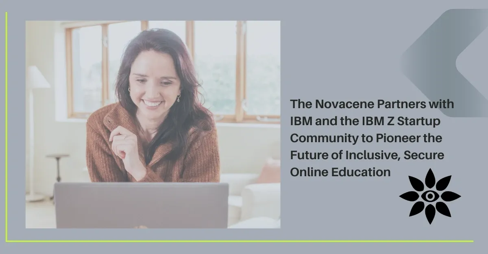

Working With IBM to Build Schools in the Cloud

A partnership for trusted, AI-aligned learning systems
In education, the infrastructure we build matters as much as the lessons we teach. The Novacene has always been driven by a question: What if we could design education to operate at the speed of care, not just compliance?
Now, with IBM as a strategic partner through the IBM Partner Plus programme and IBM Z Startups, we are taking that vision to a global stage.
Why IBM? Why Now?
Education systems are at a crossroads. The need for trustworthy AI, secure learner identities, and resilient hybrid learning environments is urgent. IBM’s expertise in post-quantum cryptography, hybrid cloud, and AI integration — combined with our on-the-ground experience designing ethical, neurodivergent-affirming learning systems — creates a unique opportunity to reimagine the foundation of schooling.
This partnership gives us:
- Technical mentorship on IBM Z technology and onboard AI processing
- Security leadership through IBM Hyper Protect and LinuxONE 5
- Tooling from watsonx.ai to prototype adaptive, relational learning assistants
- IBM Cloud credits and resources to develop a federated learner identity system
- Global networking and go-to-market support through the IBM Z community
From Local Innovation to Global Greenprints
We’ve been piloting hyflex learning models in the UK — blending physical, digital, and community-based education to meet diverse learner needs. With IBM’s infrastructure, we can take the best of these local innovations and scale them internationally, while preserving the principles of decentralisation, child data sovereignty, and relational learning.
In parallel, we are engaging with research partners to rigorously measure the impact of these models on attendance, wellbeing, and inclusion — ensuring the technology truly serves human outcomes.
A Shared Ethos
As Adam LG Ring, Global Head of IBM Z Startups, puts it:
“We empower high-impact ventures like The Novacene who are pioneering work in edtech and AI — setting high goals for effectiveness, security, and reliability in future-proof education.”
That alignment matters. We are not interested in “AI for AI’s sake.” We are building systems that are coherent, human-centred, and future-resilient — and that requires a partner equally committed to ethics, openness, and long-term trust.
An Invitation to Collaborate
If you are:
- A school leader exploring hybrid or decentralised learning
- An innovator in AI, education, or civic infrastructure
- A policymaker ready to think beyond compliance and towards care
…then this work is for you. The Novacene and IBM partnership is not a closed circle — it’s a lighthouse in the cloud, and the beam is meant to be shared.
📩 press@thenovacene.com 🌐 www.thenovacene.com